Show Lighting Objects
Scenario: Highlight all associated lighting objects in color.
1st Step: Highlight an Associated Lighting Object
Scenario: You want to highlight an associated lighting object to evaluate the syntax.
- Edit
 is enabled in BIM Viewer.
is enabled in BIM Viewer. - Desigo CC Objects and BIM objects are associated.
- An empty Lighting is available.
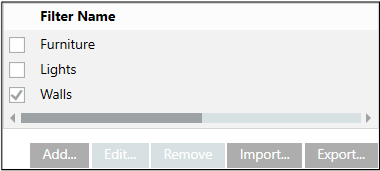
- Click Toggle objects tree display .
- Click Highlight selected object .
- In the object tree, select the room and then the lighting object. You can also do this in the System Browser in the Logical View as an alternative.
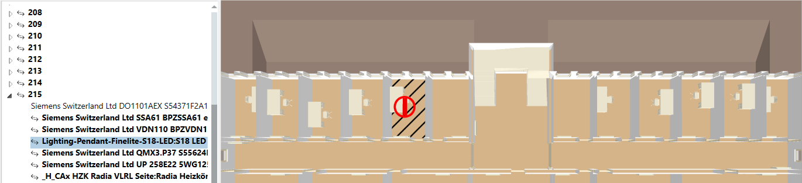
- Right-click and select Add to filter, followed by Lighting.
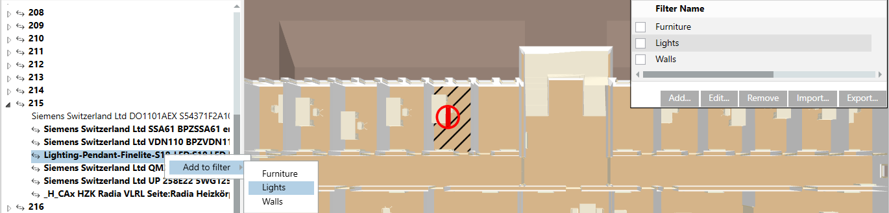
- In the Filter Name dialog box, select the Lighting filter.
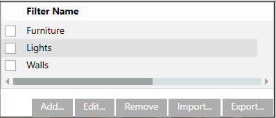
- Click Edit.
- The assigned lighting object is displayed. The Data point name references the technical address Lgt(1). The object model is displayed in the Data point type column. The IFC Name column references the selected lighting object. The BIM object model IFCLIGHTFIXTURE displays in the IFC Type column.
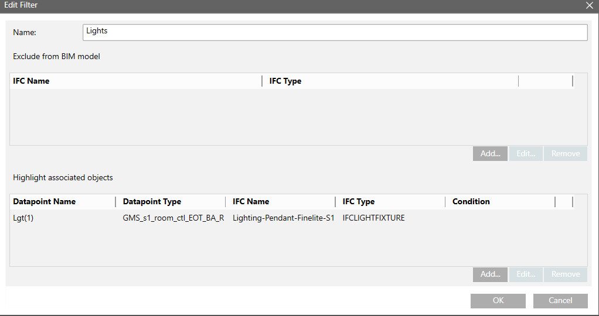
- Test: Clear Highlight selected object .
- Test: Select the Lighting check box.
- The light fixture configured in the filter is highlighted in color.
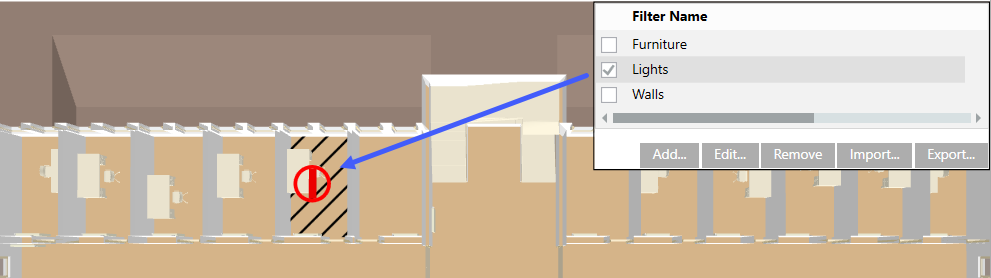
- Click Save
 .
.
2. Step: Highlight all Lighting Objects
Scenario: After finding the BIM object model for lighting objects, you can emphasize all lighting objects associated with this BIM object model based on the lighting object.
- In the Filter Name dialog box, select the Lighting filter.
- Click Edit.
- Displays the associated BIM object. The Data point name references the technical address Lgt(1). The object model is displayed in the Data point type column. The IFC Name column references the selected lighting object. The BIM object model IFCLIGHTFIXTURE displays in the IFC Type column.
- In section Highlight associated objects, select BIM object model.
- Click Edit.
- The Emphasized objects dialog box displays.
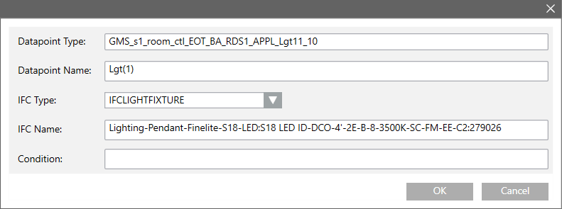
- Delete the entry in the IFC Name text field and enter an asterisk (*).
- The filter entry can be customized in the Data point name text field:
- Lgt(1) = Displays only lighting objects under this data point name;
- Lgt(2) = Displays only lighting objects under this data point name;
- Lgt* = Displays all lighting objects.
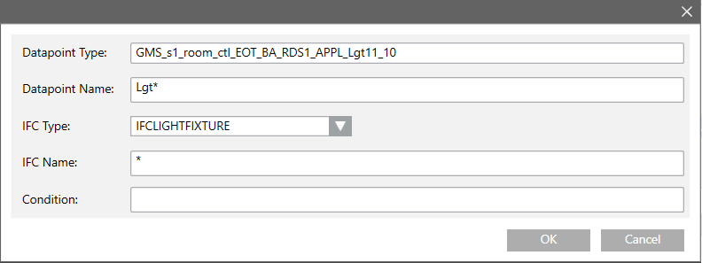
- Click OK and then OK to close both dialog boxes.
- Test: Select the Lighting check box.
- All lighting objects under this data point are highlighted in color.
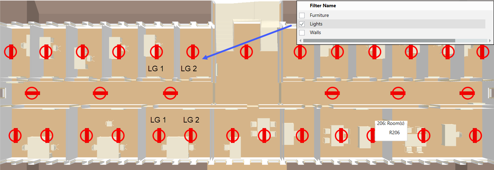
- Click Save .
3. Step: Set Condition
Scenario: Display all switched-on lighting objects.
- In the Filter Name dialog box, select the Lighting filter.
- Click Edit.
- In section Highlight associated objects, select BIM object model.
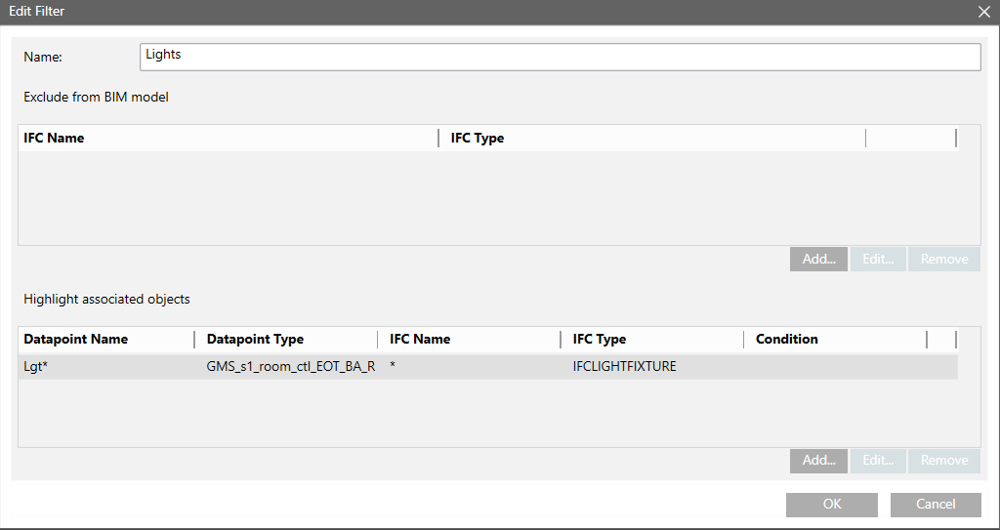
- Click Edit.
- Select text field Condition and enter >0.
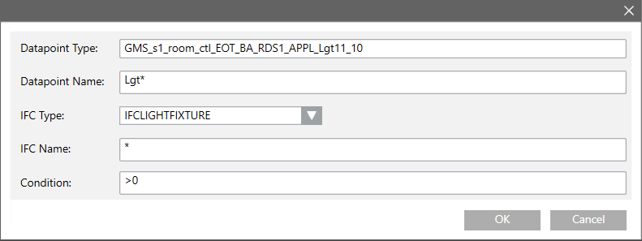
- Click OK and then OK to close both dialog boxes.
- Test: Select the Lighting check box.
- Highlight all switched-on lighting objects in color.
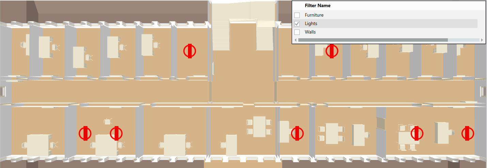
- Click Save .